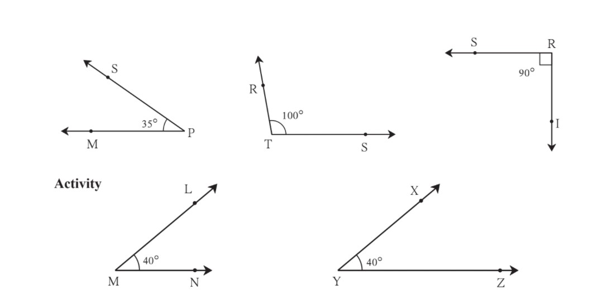

1.Geometrical Constructions
Let's recall
In previous classes, we have learnt about the line, line segment, angle, angle bisector, etc. We measure an angle in degrees. If ∠ABC measures 40°, we write it as m∠ABC = 40°.
Angle Bisector
You see the figure of ∠ABC alongside. An angle bisector divides an angle into two equal parts. Is ray BM the bisector of ∠ABC?
Perpendicular Bisector of a Line Segment
Draw a line segment PS of length 4 cm and draw its perpendicular bisector. Name it line CD.
m∠CMS = 90°
Let's learn
The Property of the Angle Bisectors of a Triangle
The Property of Perpendicular Bisectors of the Sides of a Triangle
PRACTICE SET 1
Q.1 Draw line segments of the lengths given below and draw their perpendicular bisectors.
(1) 5.8cm

(2) 6.7cm
(3) 3.8cm
Q.2 Draw angles of the measures given below and draw their bisectors.
(1) 105°
(2) 55°
(3) 90°
Q.3 Draw, an obtuse-angled triangle and a right-angled triangle. Find the points of concurrence of the angle bisectors of each triangle. Where do the points of concurrence lie?.
Solution:-
Q.4 Draw a right-angled triangle. Draw the perpendicular bisectors of its sides. Where does the point of concurrence lie?
Solution:-
------------------------------------------------------------ ------------------------------------------------------------ -------------------------------------------------
Let's learn
Construction of a Triangle
Let us see if we can draw the triangles when the measures of some sides and angles, are given.
Draw DABC such that l(AB) = 4 cm, and l(BC) = 3 cm.
(I) To construct a triangle given the lengths of its three sides
Example Draw DXYZ such that l(XY) = 6 cm, l(YZ) = 4 cm, l(XZ) = 5 cm
A similar construction can be drawn on the other side of the base as shown below.
PRACTICE SET 2
Q.1 Draw triangles with the measures given below.
(a) In ∆ABC, l(AB) = 5.5 cm, l(BC) = 4.2 cm, l(AC) = 3.5 cm.
(b) In ∆STU, l(ST) = 7 cm, l(TU) = 4 cm, l(SU) = 5 cm.
(c) In ∆PQR, l(PQ) = 6 cm, l(QR) = 3.8 cm, l(PR) = 4.5 cm.
Q.2 Draw an isosceles triangle with base 5 cm and the other sides 3.5 cm each.
Q.3 Draw an equilateral triangle with side 6.5 cm.
Q.4 Choose the lengths of the sides yourself and draw one equilateral, one isosceles and one scalene triangle.
(a) Equilateral triangle LMN, l(LM) = l(MN) = l(LN) = 4 cm.
(b) Draw an equilateral triangle with side 6.5 cm.
------------------------------------------------------------ ------------------------------------------------------------ -------------------------------------------------
(II) To construct a triangle given two sides and the angle included by them
Example Draw ∆PQR such that l(PQ) = 5.5 cm, m∠P = 50°, l(PR) = 5 cm.
(A rough figure has been drawn showing the given information. ∠P is an acute angle and that is shown in the rough figure, too. )
Steps:
The ray PG may be drawn on the other side of the seg PQ. Its rough figure will be as shown below.
PRACTICE SET 3
Q. Draw triangles with the measures given below.
1. In ∆MAT, l(MA) = 5.2 cm, m∠A = 80°, l(AT) = 6 cm.
2. In ∆NTS, m∠T = 40°, l(NT) = l(TS) = 5 cm.
3. In ∆FUN, l(FU) = 5 cm, l(UN) = 4.6 cm, m∠U = 110°.
4. In ∆PRS, l(RS) = 5.5 cm, l(RP) = 4.2 cm, m∠R = 90°.
------------------------------------------------------------ ------------------------------------------------------------ -------------------------------------------------
(III) To construct a triangle given two angles and the included side
Example Construct ∆XYZ such that l(YX) = 6 cm, m∠ZXY = 30°, m∠XYZ = 100° ∠XYZ is an obtuse angle and that is shown in the rough figure.
Steps:

PRACTICE SET 4
Q. Construct triangles of the measures given below.
1. In ∆SAT, l(AT) = 6.4 cm, m∠A = 45°, m∠T = 105°.
2. In ∆MNP, l(NP) = 5.2 cm, m∠N = 70°, m∠P = 40°
3. In ∆EFG, l(EG) = 6 cm, m∠F = 65°, m∠G = 45°.
4. In ∆XYZ, l(XY) = 7.3 cm, m∠X = 34°, m∠Y = 95°.
------------------------------------------------------------ ------------------------------------------------------------ -------------------------------------------------
(IV) To construct a right-angled triangle given the hypotenuse and one side
We know that a triangle with a right angle is called a right-angled triangle. In such a triangle, the side opposite the right angle is called the hypotenuse.
Example Draw ∆LMN such that m∠LMN = 90°, hypotenuse = 5 cm, l(MN) = 3 cm.
Let us draw the rough figure using the given information.
As m∠LMN = 90°, we draw a right-angled triangle approximately and mark the right angle. Thus we show the given information in the rough figure.
Steps:
PRACTICE SET 5
Q. Construct triangles of the measures given below.
1. In ∆MAN, m∠MAN = 90°, l(AN) = 8 cm, l(MN) = 10 cm.
2. In the right-angled ∆STU, hypotenuse SU = 5cm and l(ST) = 4cm.
3. In ∆ABC, l(AC) = 7.5 cm, m∠ABC = 90°, l(BC) = 5.5cm.
4. In ∆PQR, l(PQ) = 4.5 cm, l(PR) = 11.7cm, m∠PQR = 90°.
------------------------------------------------------------ ------------------------------------------------------------ -------------------------------------------------
Activity
Try to draw triangles with the following data.
Let's learn
Congruence of Segments
Are they of the same length? You cannot pick up and place one segment over the other. Trace the seg AB along with the names of the points on a sheet of transparent paper. Place this new segment on seg PQ. Verify that if point A is placed on point P, then B falls on Q. It means that seg AB is congruent with seg PQ.
We can infer from this that if two line segments have the same lengths, they coincide exactly with each other. That is, they are congruent. If seg AB and seg PQ are congruent, it is written as seg AB ≅ seg PQ.
Now I know!
If given line segments are equal in length, they are congruent.
In other words, if one line segment is congruent to another and that segment is congruent to a third, then the first segment is also congruent to the third.
Activity 1
Take any box. Measure the lengths of each of its edges. Which of them are congruent?
Activity 2
From the shape shown below, write the names of the pairs of congruent line segments.
PRACTICE SET 6
Q.1 Write the names of pairs of congruent line segments. (Use a divider to find them.)
Q2. On the line below, the distance between any two adjoining points shown on it is equal. Hence, fill in the blanks.
------------------------------------------------------------ ------------------------------------------------------------ -------------------------------------------------
Let's learn.
Congruence of Angles
Observe the given angles and write the names of those having equal measures.
Draw two angles ∠LMN and ∠XYZ of 40° each as shown in the figure. Trace the arms of ∠LMN and the names of the points on a transparent paper. Now lift the transparent paper and place the angle you obtain on ∠XYZ. Observe that if point M is placed on Y and ray MN on ray YZ, then ray ML falls on ray YX. We can infer that angles of equal measure are congruent. The congruence of angles does not depend on the length of their arms. It depends upon the measures of those angles. That ∠LMN is congruent with ∠XYZ is written as ∠LMN ≅ ∠XYZ.